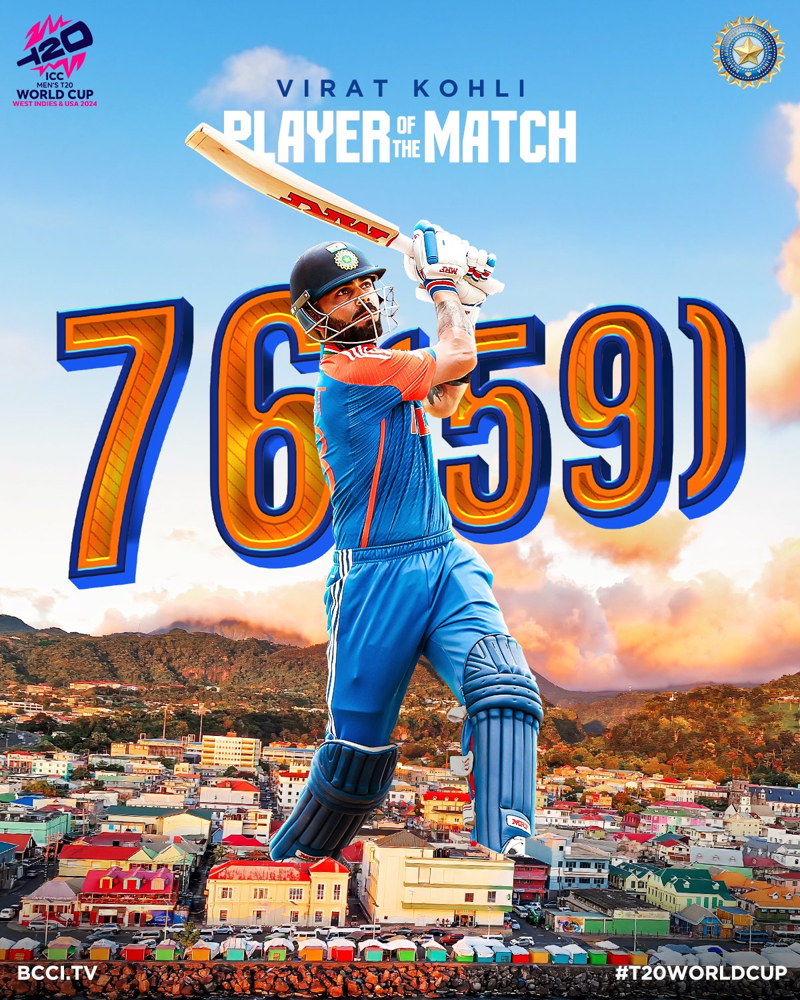
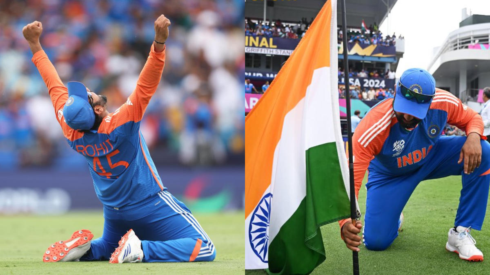
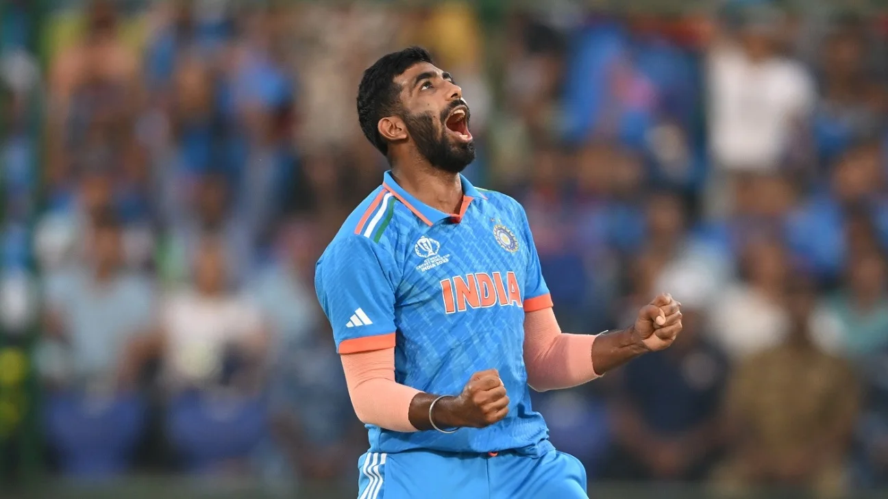

Breaking News: India win T20 World Cup 2024
There have been nine editions of the tournament and India has participated in every edition. India have won it twice in 2007 and 2024 while also finishing as runners-up in 2014. India won the 2024 World T20 without being defeated in the tournament, thus becoming the first team to do so..

Man of match
On Saturday, Virat Kohli was named the Man-of-the-Match of the final after his 59-ball 76 helped India to a match-winning total

Captin Of India
Rohit Sharma has etched his name in history books by becoming the second Indian captain after Mahendra Singh Dhoni to lead the Men in Blue to T20 World Cup glory

Best bowler
Collecting 15 wickets at an average of 8.26, Bumrah finished with an astonishing economy of just 4.17,